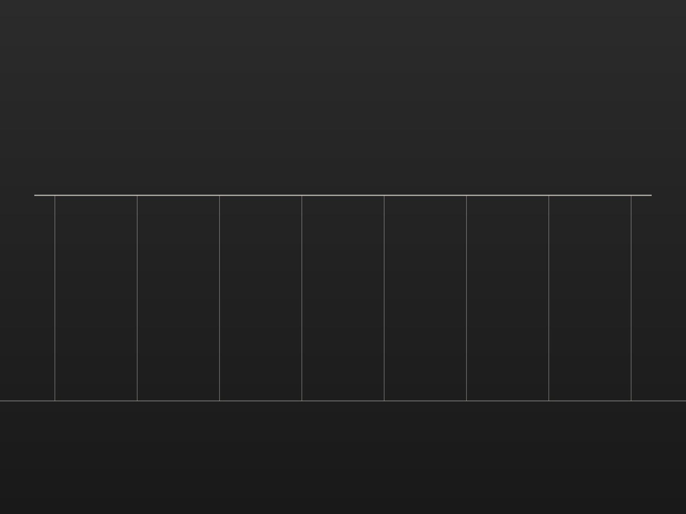
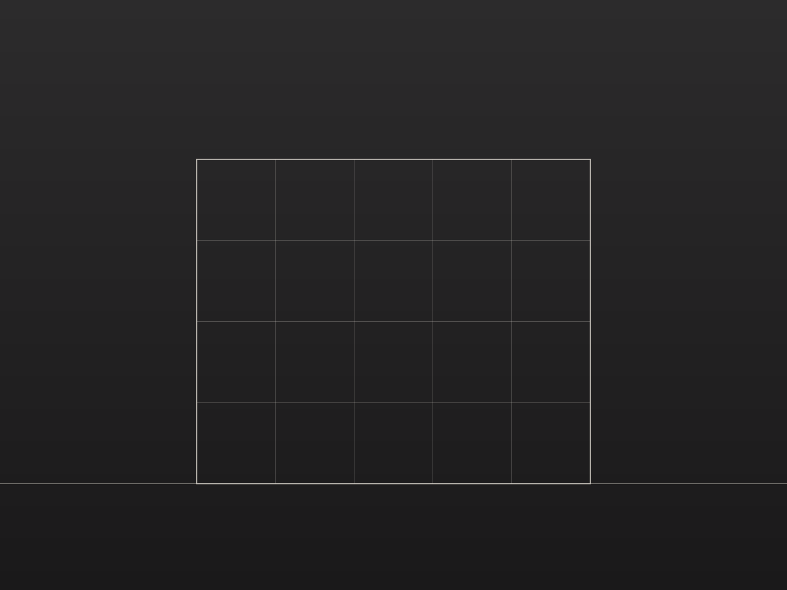

Cultural — Lisbon
Meridian Pavilion
A cultural pavilion for rotating exhibitions, conceived as a single long roof lifted above the ground. Structure stays exposed throughout, so the building explains its own logic.
- Location
- Lisbon, Portugal
- Year
- 2025
- Scope
- Architecture
- Size
- 1,850 m²


01 / 03